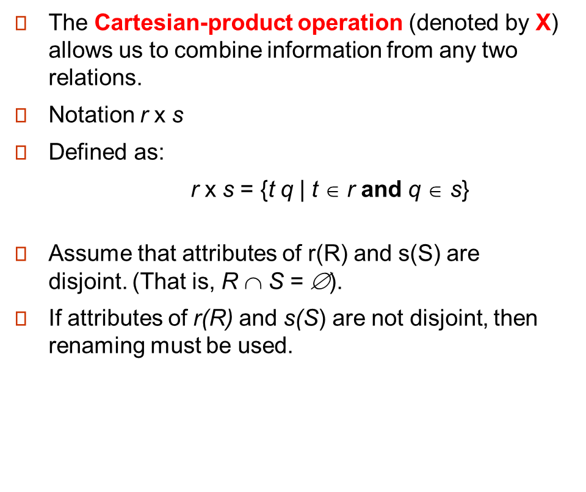
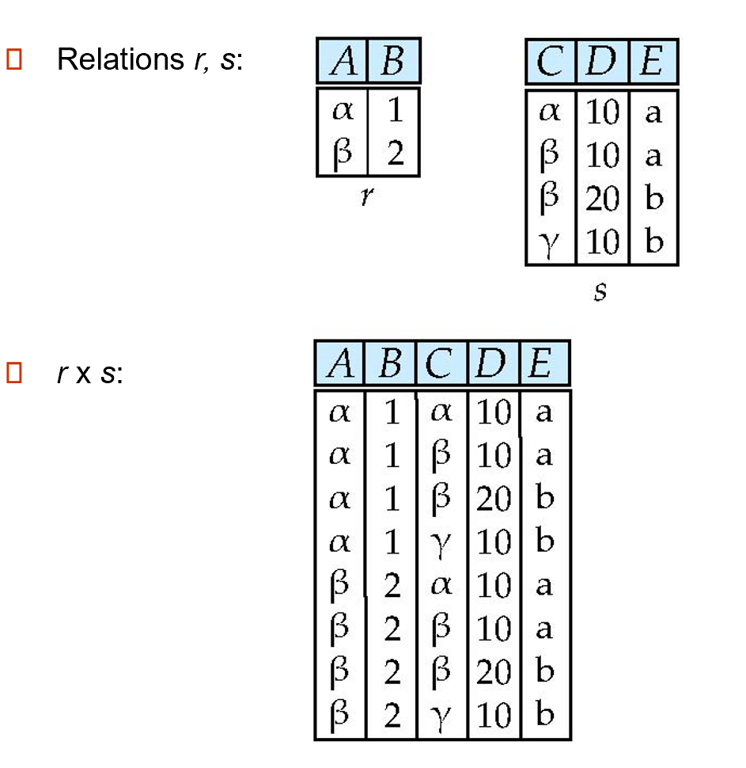
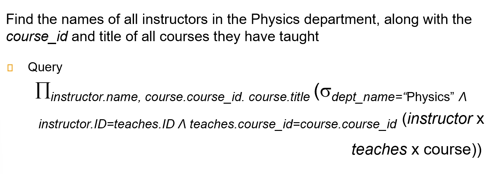
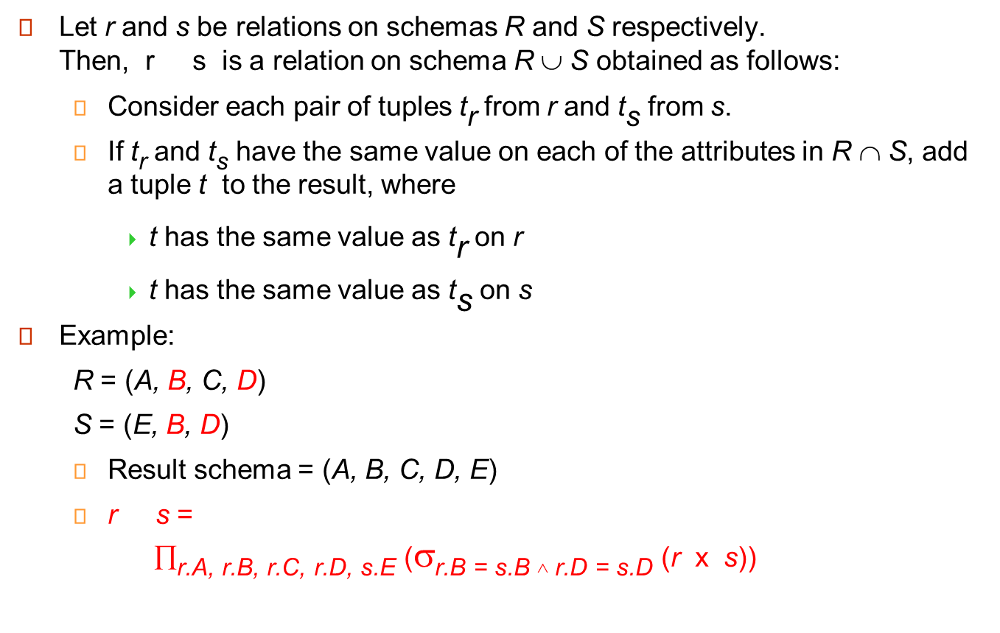
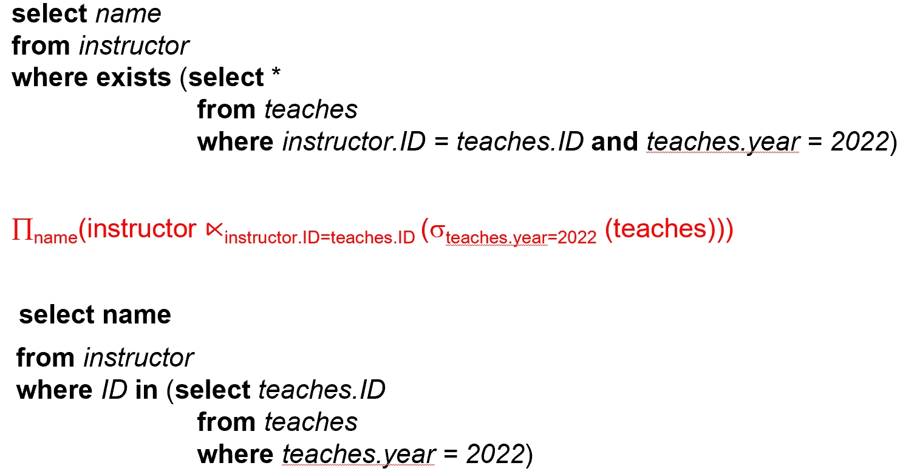

chapter 2: The Rational Model¶
1.Structure of Relational Databases¶
1.1 Concepts¶
Formally, given sets D1, D2, …. Dn ,a relation r is a subset of D1 x D2 x … x Dn.Thus, a relation is a set of n-tuples (a1, a2, …, an) where each ai 属于 Di.
就是说，relation是好几个元组tuple
Example
A1, A2, …, An are attributes.A1, A2, …, An 是属性
R = (A1, A2, …, An ) is a relation schema.R = (A1, A2, …, An) 是一个关系模式
Example
instructor = (ID, name, dept_name, salary)
A relation instance r defined over schema R is denoted by r (R).The current values a relation are specified by a table.An element t of relation r is called a tuple and is represented by a row in a table
1.2 attributes¶
- The
set of allowed valuesfor each attribute is called thedomain（域）of the attribute - Attribute values are (normally) required to be
atomic（原子的）; that is, indivisible (attribute values不可再分，如诸葛亮，张飞，不要再拆成姓和名) - The special value null （空值） is a member of every domain(任何一个值域里面都有一个null值)
- The null value causes complications in the definition of many operations
1.3 relations are unordered¶
Order of tuples is irrelevant (tuples may be stored in an arbitrary order)
2 Database schema¶
- Database schema -- is the logical structure of the database.
- Database instance -- is a snapshot of the data in the database at a given instant in time.数据库实例：某个时间点数据库的快照
Example
3 Keys¶
- K is a superkey (超键) of R if values for K are sufficient to identify (唯一确定) unique tuple of each possible relation r(R). e.g. {ID} or {ID, name}
- Superkey K is a candidate key (候选键) if K is minimal. 即 K 中没有冗余属性.候选键是超键中最小的集合，它的任何一个真子集不可确定唯一一个元组
- One of the candidate keys is selected to be the primary key (主键).
- Foreign key (外键) Relation r1 may include among its attributes the primary key of another relation r2. This attribute is called a foreign key from r1, referencing r2. 类似于指针，外键限制就是关系 r1 引用的主键必须在关系 r2 中出现。
- Referential integrity(参照完整性) constraint requires that the values appearing in specified attribute(s) A of any tuples in the referencing relation r1 also appear in specified attribute(s) B of at least one tuple in the referenced relation r2.类似于外键限制，但不局限于主键.
外键

参照完整性

4 Database and Schema diagram¶
Example

schema diagram


5 Rational Query languages¶
- Procedural vs.non-procedural, or declarative
- “Pure” languages:
- Relational algebra(关系代数)
- Tuple relational calculus（元组关系演算）
- Domain relational calculus（域关系演算）
- The above 3 pure languages are equivalent in computing power
- We will concentrate on relational algebra
- Not Turing-machine equivalent
- Consists of 6 basic operations
5.1 Select¶
Select

5.2 project投影¶

Project

5.3 union¶
作用对象是关系relation,可用来连接两个select
Union
5.4 set difference¶

作用在两个relation，可用来对两个select相减
Set

5.5 Cartesian-Product Operation¶

Example

5.6 compositions of operations¶
5.7 rename operations¶
密度符号ρ！
5.8 Some Query Examples¶
Example1
Example2

Example3
 只要存在比你的工资高的人，你的工资就被挑出来，然后所有工资减去所有你们的工资就是最高工资，也就是不会被挑出来的工资
只要存在比你的工资高的人，你的工资就被挑出来，然后所有工资减去所有你们的工资就是最高工资，也就是不会被挑出来的工资
5.9 Formal Definition¶
 这些都是关系代数表达式
这些都是关系代数表达式
5.10 Additional operands¶
Note

5.10.1 Set intersection¶

Example

5.10.2 Natural-Join operation¶

Example

- theta join
Tip
 一些性质，交换律、结合律，和theta join的符号表示
一些性质，交换律、结合律，和theta join的符号表示
5.10.3 Outer Join¶

 第一个公式配着下面的example比较好理解，r减去((R)和(rs的natural set)的交),也就是左边的列都存在，右边的列内容全部用null补上。第二个工式同理。第三个同同理。
第一个公式配着下面的example比较好理解，r减去((R)和(rs的natural set)的交),也就是左边的列都存在，右边的列内容全部用null补上。第二个工式同理。第三个同同理。
Examples

5.10.4 semijoin¶
 简单来说，上式就是保留r中能与s相连的元组
简单来说，上式就是保留r中能与s相连的元组
Example
 r.B=s.B,但最终要保证B和D都相等？为什么呢？
r.B=s.B,但最终要保证B和D都相等？为什么呢？
- Semijoin（半连接） Operation and Nested Query 
Tip
5.10.5 Division Operation¶

Example


5.11 Aggregate Functions and Operations¶
Tip


G1,G2等等是用来分组用的
Example

6 Multiset Relational Algebra¶

这张图片的核心内容是关于纯关系代数和多集合（多重集）关系代数的区别和定义。具体内容包括： 1. 纯关系代数：移除所有重复项，例如在投影之后。 2. 多集合（多重集）关系代数：保留重复项以匹配SQL语义。 - SQL最初保留重复项是为了效率考虑，但现在这是一个特性。 3. 多集合关系代数的定义如下： - 选择（selection）：如果元组满足选择条件，则保留与输入中相同数量的重复元组。 - 投影（projection）：每个输入元组产生一个输出元组，即使它是重复的。 - 笛卡尔积（cross product）：如果在关系r中有m个t1的副本，在关系s中有n个t2的副本，则在r × s中有m × n个t1.t2的副本。 4. 集合运算符： - 并集（union）：m + n个副本。 - 交集（intersection）：min(m, n)个副本。 - 差集（difference）：min(0, m - n)个副本。 这些概念帮助理解如何在不同的关系代数系统中处理和处理数据，特别是在涉及到重复数据的情况下。
讲人话
关系代数中，我们要求关系要是一个严格的集合。但实际数据库中并不是，而是一个多重集，允许有重复元素存在。因为一些操作的中间结果会带来重复元素，要保持集合特性开销很大，因此实际操作中不会去重。
7 SQL and Relational Algebra¶

说人话